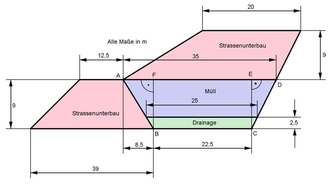

Aufgabe 141 Auf dem dargestellen 1 km langen Straßenabschnitt soll Müll verbaut werden. Wie viel m³ kann man unterbringen? Wie viel m³ Straßenunterbau sind es? Entlang der Linie A-B-C-D soll als Schutz für den Boden Folie verlegt werden. Wie viel m² braucht man?  Der Müll ist in einem trapezförmigen Prisma verbaut. 1 km = 1 000 m 25 m + 35 m VMüll = --------------- * (9 m - 2,5 m) * 1 000 m = 195 000 m³ 2 Der Straßenunterbau sind zwei trapezfürmige Prismen. 39 m + 12,5 m 35 m + 20 m VUnterbau = (---------------- * 9 m + ------------- * 9 m) * 1 000 m = 2 2 VUnterbau = (231,75 m² + 247,5 m²) * 1 000 m = 479 250 m³ Länge der Folie = A - B - C - D Satz von Pythagoras im Dreeieck ABF: AB² = AF² + BF² AF = 8,5 m BF = 9 m AB² = 8,5² m² + 9² m² = 153,25 m² |√ AB = 12,4 m Satz von Pythagoras im Dreeieck CDE: CD² = CE² + DE² CE = 9 m DE = 35 m - 22,5 m - 8,5 m = 4 m CD² = 9² m² + 4² m² = 97 m² |√ CD = 9,85 m AFolie = (12,4 m + 22,5 m + 9,85 m) * 1 000 m = 44 750 m²